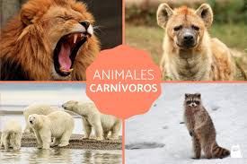

Los animales carnívoros o zoófagos son aquellos organismos consumidores cuya dieta se compone exclusivamente de la materia orgánica de otros animales. Son organismos heterótrofos. En esta clasificación se consideran tanto a los animales depredadores, como a los carroñeros.
El tiburón blanco, la pantera negra, el león de la Sabana, el oso polar, el cocodrilo e incluso una anaconda son otros ejemplos de especies carnívoras. La lista de animales que se alimentan de carne es interminable, incluyendo al ser humano.